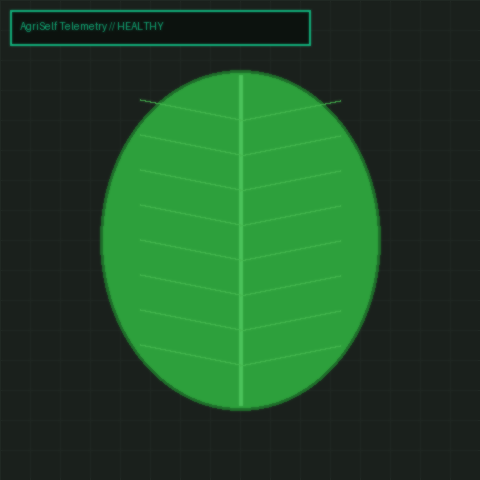

AgriSelf 2.5D Digital Twin Farm Command Center
REAL-TIME SENSOR MESHVisual multi-depth telemetry, active drip manifold lines, and drone aerial coverage
IoT Soil Probes & Hardware Actuators
Real-time sub-surface moisture, dynamic NPK balance, and smart valve actuation
Real-Time Soil Moisture & Temperature Waveforms
IoT Edge telemetry sampled via wireless mesh gateway at 1 Hz
Hyperspectral & Computer Vision Crop Scanner
Detect early pest, fungal disease, and nutrient stress 7–10 days before visual onset
Drag & drop leaf photo or click to upload
Supports 4K RGB, Multispectral Drone orthomosaics, PNG/JPG

Diagnostic Results & Actionable Prescription
Automated agronomic recommendations & smart valve hardware protocol
🔬 AgriSelf Automated Treatment Plan
Maintain autonomous micro-irrigation schedule and baseline NPK balance.
Weekly prophylactic neem oil spray (0.2%) during high humidity.
Standard micro-drip pulse: 12 min at 06:00 and 18:00.
Autonomous Micro-Climate & Dynamic Micro-Dosing AI
Micro-drips tailored to individual crop rows based on real-time soil intake rate
AgriSelf AI Dynamic Dosage & Actuator Commands
Real-time Penman-Monteith Evapotranspiration & Micro-Nutrient Balancing
Direct Valve Actuation
Deploy calculated pulse dosage directly to selected farm zone hardware
Predictive Market Link & Optimal Harvest Timing
AI recommends optimal harvest timing based on local crop market price trends
7-Day Historical Spot Price & 7-Day AI Price Forecast ($/ton)
AI PEAK PREDICTORFarm Economics & ROI Payback Calculator
Commercial smallholders, greenhouse farms, and organic orchards
AgriSelf Business Model & Streams
Plug-and-play IoT probes, smart drip actuators, edge mesh gateway.
Continuous AI predictive analytics, autonomous micro-dosing, market links.
AGRISELF
Autonomous AI Micro-Farming & Precision Agritech System
AgriSelf is an end-to-end, AI-powered autonomous farming platform designed to convert small-to-medium agricultural land into self-managing, high-yield ecosystems. By integrating IoT edge sensors, predictive weather AI, and automated irrigation and fertilization hardware, AgriSelf enables farmers to maximize crop yields, lower resource waste, and achieve streamlined farm management.
1. IoT Edge Sensors
Multi-depth soil moisture probes, NPK electro-chemical sensors, pH meters, and ambient micro-climate telemetry stations continuously mapping soil vigor.
2. AI Aerial Diagnostics
Autonomous drone multispectral & thermal surveys detecting fungal spores, nutrient deficiencies, and moisture stress 7–10 days before visual onset.
3. Smart Automated Drip
Plug-and-play actuators, solenoid valves, and dynamic micro-dosing injectors delivering exact water and nutrients per individual crop row.
⚠️ MARKET PROBLEMS
- Resource Inefficiency: Over-irrigation and excessive chemical fertilizer usage waste up to 40% of inputs and deplete soil health.
- Unpredictable Yields: Climate volatility, sudden pest outbreaks, and erratic weather cause severe crop loss without early warning.
- Labor Shortages: Aging farming populations and rising manual labor costs make traditional farm management unsustainable.
- Data Disconnect: Raw agricultural sensor data is complex; farmers lack actionable, automated execution tools.
✅ THE AGRISELF SOLUTION
- Autonomous Micro-Climate Care: Precise soil-level IoT control adjusts water and nutrient delivery automatically in real time.
- AI Predictive Diagnostics: Computer vision and ML models detect early pest and disease threats 7–10 days before visual impact.
- Automated Execution: Plug-and-play actuators, smart valves, and autonomous drones reduce daily labor by 70%.
- Simplified App Control: One-click dashboard providing clear yield projections and automated task management.
HOW IT WORKS // 4-STEP CLOSED LOOP
Sense & Monitor
IoT soil probes & drone cameras continuously map moisture, NPK levels, and crop health.
AI Engine Analysis
AgriSelf AI processes environmental feeds, weather forecasts, and historical crop data.
Autonomous Action
Smart valves and automated micro-dosing systems deliver exact water and nutrients.
Optimize & Harvest
Continuous feedback loops improve seasonal yield and maximize profit margins per acre.
Target Market Strategy
Commercial smallholders (1–50 acres), greenhouse hydroponic operators, organic orchards, and high-value berry growers.
Semi-arid regions facing water restrictions, high-cost agricultural zones, and precision export farming.
Business Model & Unit Economics
Hardware setup fee (IoT hubs + smart valves) + recurring SaaS subscription for AI analytics, drone flights & automated control.
Estimated 1.2 years via 40% input savings and 35% yield increase.